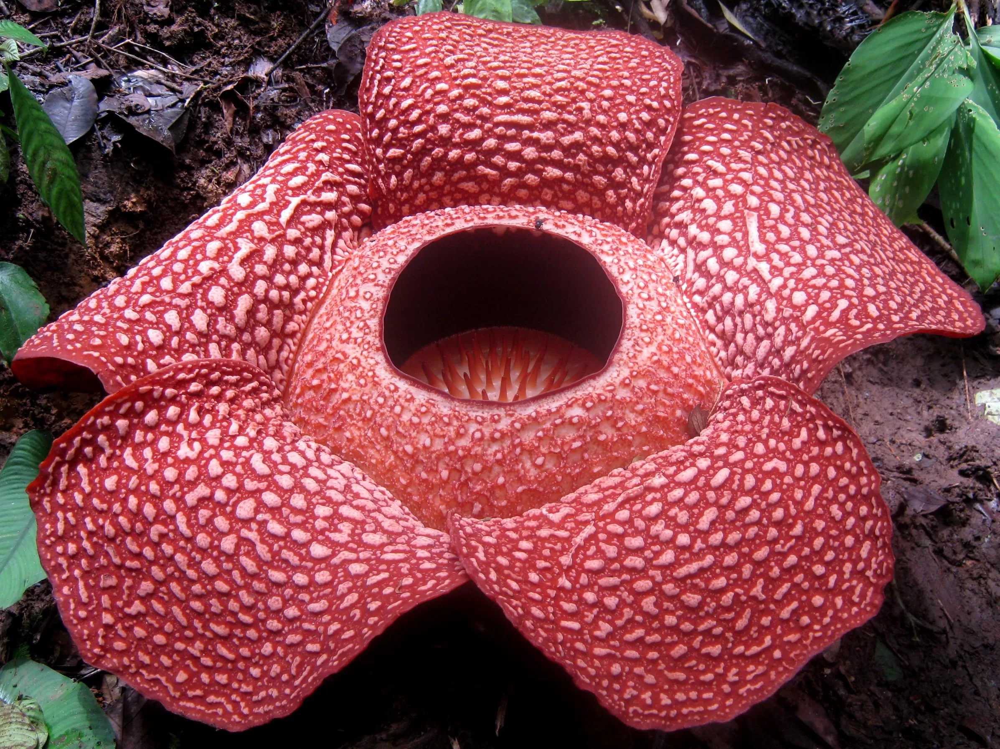
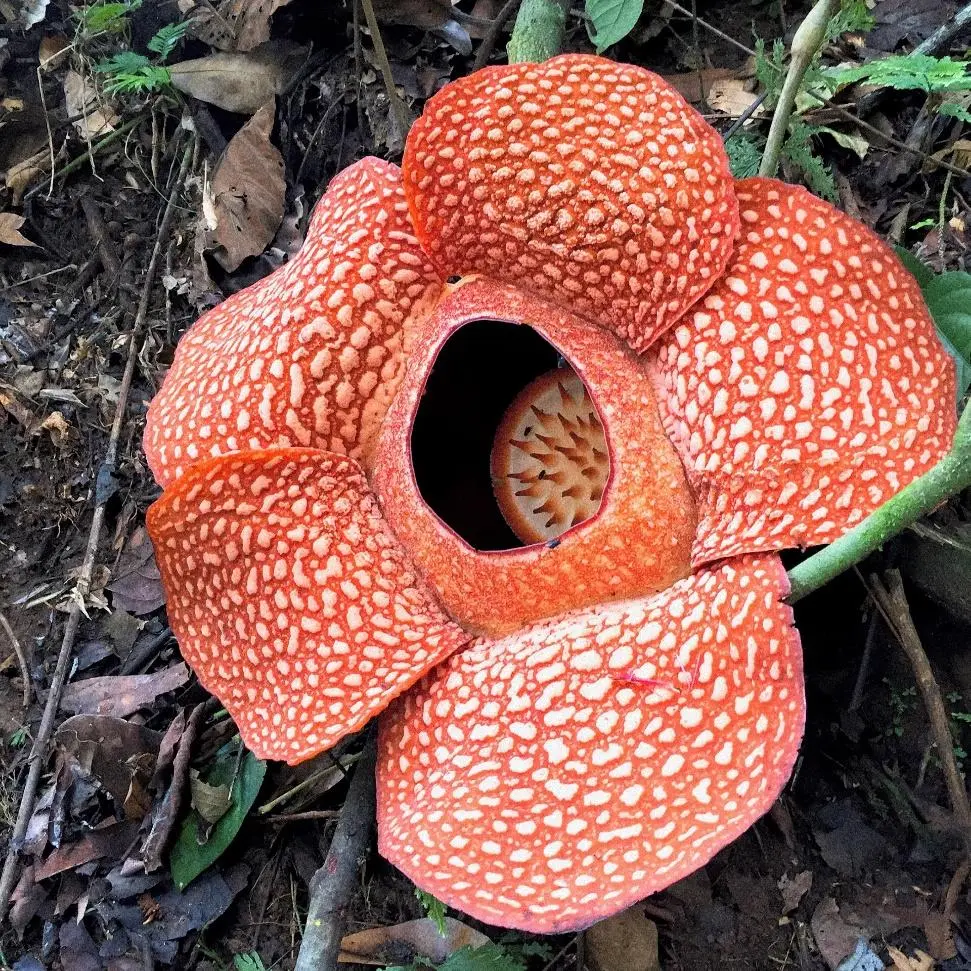
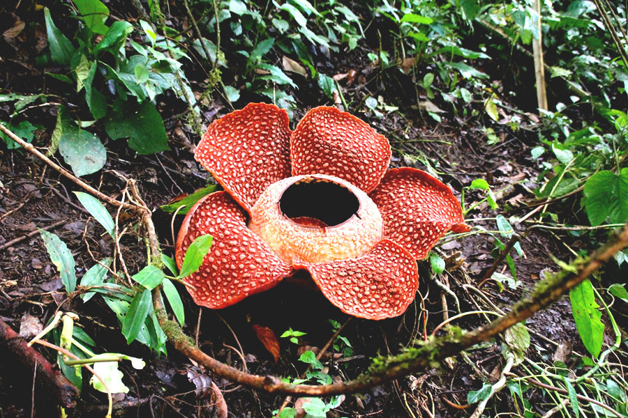
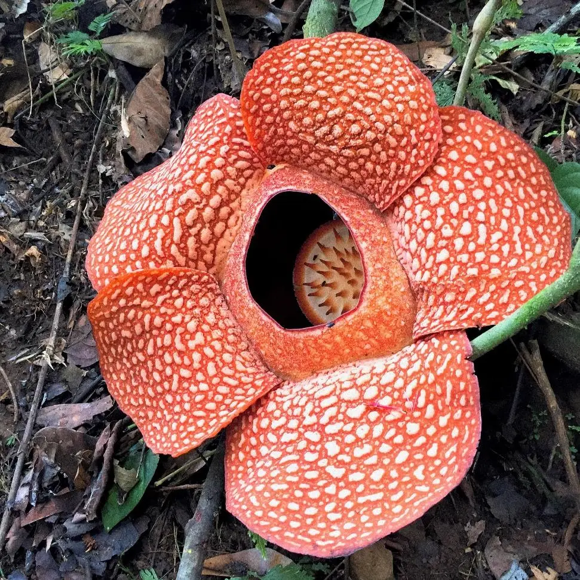
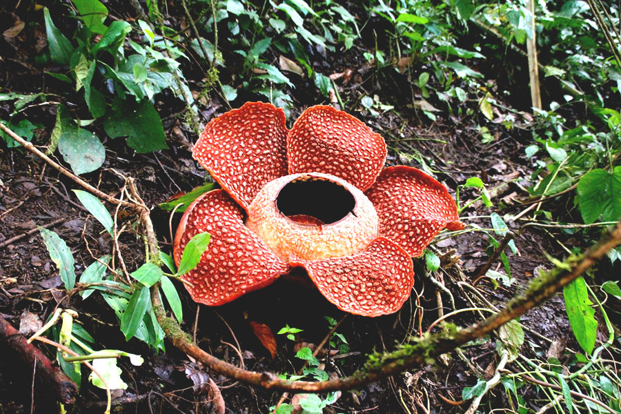

Rafflesia Arnoldii
Deskripsi Umum
Rafflesia arnoldii adalah bunga terbesar di dunia yang dapat mencapai diameter hingga lebih dari 1 meter dan hanya ditemukan di hutan hujan Sumatera. Bunga ini dikenal sebagai “bunga bangkai” karena aroma menyengat yang dihasilkannya untuk menarik lalat sebagai penyerbuk. Tanaman ini bersifat parasit, hidup menempel pada akar tanaman inang tanpa memiliki batang, daun, atau akar sendiri. Karena proses pertumbuhannya yang sangat lambat dan masa mekarnya yang hanya beberapa hari, Rafflesia termasuk tanaman langka yang dilindungi.
Klasifikasi Ilmiah
| Nama Ilmiah | Rafflesia arnoldii |
|---|---|
| Famili | Rafflesiaceae |
| Habitat | Hutan Sumatera |
| Tipe | Parasit |
Fakta Unik
- Bunga terbesar di dunia.
- Mengeluarkan bau bangkai.
- Sangat langka dan dilindungi.
 


